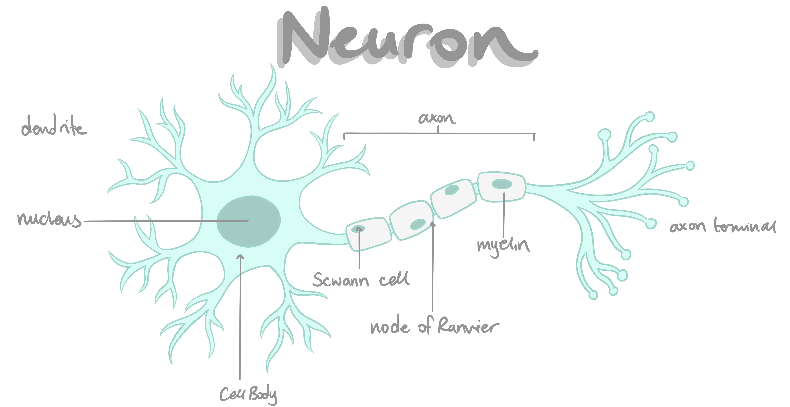
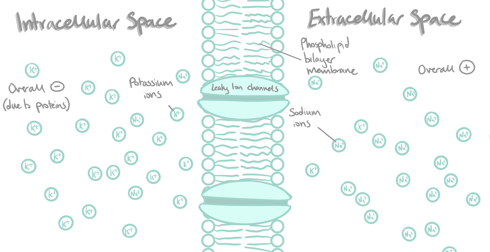
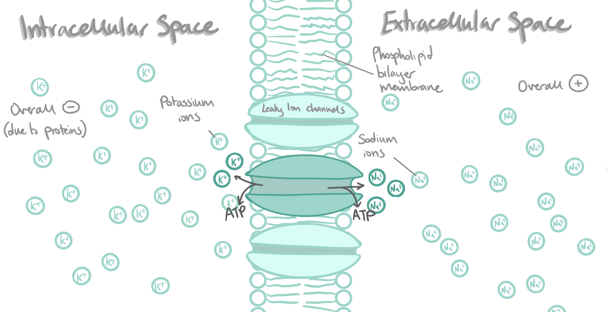
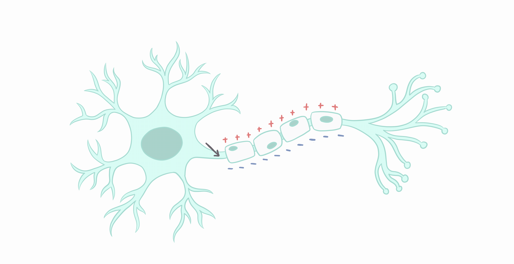
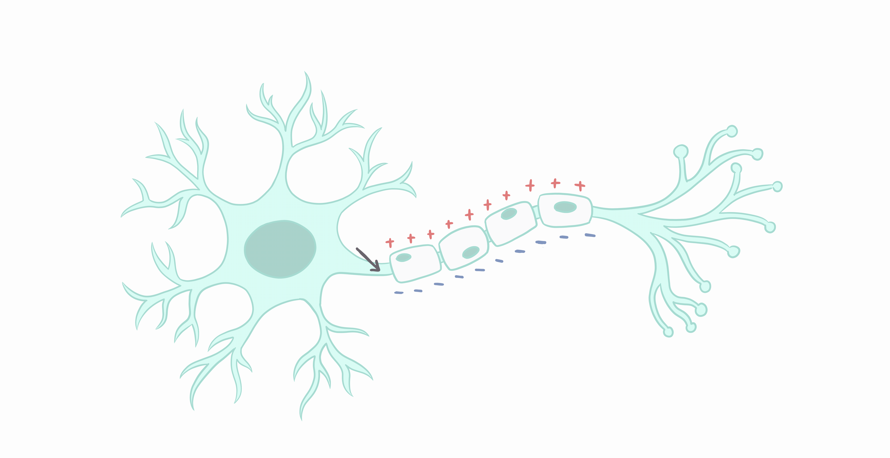
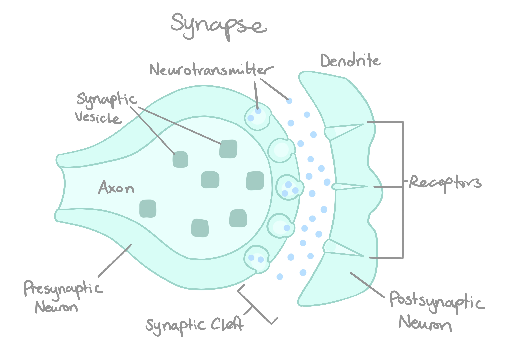

A 3D-tracing of a human neocortical neuron including dendrites and spines.
BY LUCA DONAIS
PUBLISHED JUNE 20, 2023
Your brain is an incredibly complex machine - in fact, it’s possibly the most complex single object that we humans know of. For all that complexity, the individual units that make up your nervous system - your neurons - are surprisingly simple! It’s only when you assemble an enormous quantity of them together that incredibly complex behaviours, like those we humans exhibit, become possible.
Let’s zoom in really close on just two neurons. Each of our two neurons is made up of three core components: the cell body, the dendrites, and the axon. In general, the dendrites receive input, the axon transmits output to the next neuron, and the cell body does other crucial functions for the survival of the neuron. To really understand how these functions work, though, we need to take a detour into the action potential.

Across the membrane of your nerve cell, there are lots of protein channels that allow for the facilitated diffusion of ions. The important ones that we’ll be focusing on are sodium (Na+) and potassium (K+). At baseline, there are lots of potassium ions inside the cell, an area called the intracellular space - though, the inside is still negatively charged overall, mostly because of negatively charged proteins - and lots of sodium ions outside. The area outside of the cell is called the extracellular space This creates a chemical gradient, as there are gradients of both sodium and potassium ions across the membrane; and an electrical gradient, as there is a difference in charge across the membrane. Along the membrane, there are leak channels, which are ion channels that allow small numbers of sodium ions to pass into the intracellular space, and small numbers of potassium ions to pass out of it by facilitated diffusion.

The interplay between these various forces - chemical gradients, electrical gradients, and leak channels - ends up at a point of balance, the point that is reached by the combined influence of each of these forces. This balance point, or resting potential, is, in our neurons, roughly -70 mV, relative to the extracellular space. The resting potential is built and maintained by the sodium-potassium pump, which is an ATP-powered protein pump that consumes one ATP molecule to pump two potassium ions into the intracellular space and three sodium ions into the extracellular space, preventing the resting potential from equalising.

That resting potential, though, is upset if anything happens to change the balance of ions within the cell. There are a few things that can do that, including:
- Receptors on sensory neurons. Many thermoreceptors, for example, are temperature-gated ion channels, and some mechanoreceptors (touch receptors) are ion channels that open when physically stretched;
- Receptors on the dendrites of neurons. When neurons communicate between each other, they generally do so through the release of neurotransmitters, which can be either excitatory (increasing the membrane potential of the next neuron) or inhibitory (reducing it). This will be discussed in further detail later.
- The opening of voltage-gated ion channels. Some channels open and close based on the membrane potential of the neuron, allowing ions to flow through facilitated diffusion, which has a major impact on the functioning of the action potential. More on that later, as well.
Once all of those factors are taken into account, the actual potential of the neuron is called the graded potential. This is the potential of the membrane after taking into account all of the above factors, as long as it’s below a certain threshold - which, in our neurons, is -55 mV. Increasing the membrane potential towards the threshold is called depolarization. As long as the graded potential stays below that threshold, the neuron will not fire - only once all of the collected stimulus (and therefore the graded potential) goes over that threshold, does the collected apparatus of the neuron kick into gear and fire the neuron, flinging an electrical impulse down the axon to the next neuron.
 Why does that threshold potential matter, though? Well, that’s the membrane potential at which major voltage-gated channels start to enter the equation. Voltage-gated sodium channels open at -55 mV, prompting an irreversible, all-or-nothing action potential to move down the neuron. This is called the all-or-nothing principle because once regardless of any chage in the graded potential, the action potential will only occur when the threshold potential is reached. This happens because when the voltage-gated sodium channels open at -55 mV, massive numbers of positively charged sodium ions flood across the membrane, along the concentration gradient, and so into the intracellular space, raising the membrane potential to around +30 mV. This hyperpolarization triggers voltage-gated potassium channels, causing an efflux of positively-charged potassium ions. This causes a repolarization. The loss of potassium ions sends the membrane potential rapidly back down, undershooting the resting potential of -70 mV by a bit. After this, the sodium-potassium pump starts working again, pumping two potassium ions in for every three sodium ions it pumps out, which re-establishes the resting ion balance in a stage called the refractory period. The neuron cannot be fired again during this refractory period.

This depolarization in one localised area of the cell causes a depolarization in adjacent areas of the cell, as the influx of sodium ions raises adjacent voltage-gated sodium channels above their threshold potentials. In this way, the electrical signal travels across the neuron, most notably down the axon and towards the next neuron in the chain. This signal travels, unaided, at around 0.5 to 10 metres per second (m/s). However, some neurons, especially those commonly used, need to travel with greater speed. Therefore, some neurons are surrounded by a myelin sheath, which is a lipid layer made up of oligodendrocytes in the central nervous system and Schwann cells in the peripheral nervous system and helps action potentials travel much faster across a neuron, at speeds of up to 150 m/s. Within the myelin sheath are small breaks in the lipid layer called nodes of Ranvier, and these points are the only ones where the neuron must build up an action potential, allowing it to essentially jump from one node to the next much more quickly than it otherwise would be able to.
Why does that threshold potential matter, though? Well, that’s the membrane potential at which major voltage-gated channels start to enter the equation. Voltage-gated sodium channels open at -55 mV, prompting an irreversible, all-or-nothing action potential to move down the neuron. This is called the all-or-nothing principle because once regardless of any chage in the graded potential, the action potential will only occur when the threshold potential is reached. This happens because when the voltage-gated sodium channels open at -55 mV, massive numbers of positively charged sodium ions flood across the membrane, along the concentration gradient, and so into the intracellular space, raising the membrane potential to around +30 mV. This hyperpolarization triggers voltage-gated potassium channels, causing an efflux of positively-charged potassium ions. This causes a repolarization. The loss of potassium ions sends the membrane potential rapidly back down, undershooting the resting potential of -70 mV by a bit. After this, the sodium-potassium pump starts working again, pumping two potassium ions in for every three sodium ions it pumps out, which re-establishes the resting ion balance in a stage called the refractory period. The neuron cannot be fired again during this refractory period.

This depolarization in one localised area of the cell causes a depolarization in adjacent areas of the cell, as the influx of sodium ions raises adjacent voltage-gated sodium channels above their threshold potentials. In this way, the electrical signal travels across the neuron, most notably down the axon and towards the next neuron in the chain. This signal travels, unaided, at around 0.5 to 10 metres per second (m/s). However, some neurons, especially those commonly used, need to travel with greater speed. Therefore, some neurons are surrounded by a myelin sheath, which is a lipid layer made up of oligodendrocytes in the central nervous system and Schwann cells in the peripheral nervous system and helps action potentials travel much faster across a neuron, at speeds of up to 150 m/s. Within the myelin sheath are small breaks in the lipid layer called nodes of Ranvier, and these points are the only ones where the neuron must build up an action potential, allowing it to essentially jump from one node to the next much more quickly than it otherwise would be able to.
The end of the axon is called the axon terminal. In the axon terminal are vesicles full of chemicals called neurotransmitters, which are released to the outside of the cell through exocytosis into what is called the synaptic cleft, which is the space between the axon terminal of one neuron and the dendrite of the next. These connections between neurons are called synapses, and each of our neurons has, on average, around 7 000 of them - meaning in our bodies, there are about 600 trillion synapses.

The neurons that make up each synapse are referred to as the presynaptic neuron, which is the neuron that is sending the impulse, and the postsynaptic neuron, which is the neuron receiving it. Messages are received by chemically gated ion channels, which either open or close, accepting or blocking ions, based on the neurotransmitters that are sent across the synaptic cleft. Neurotransmitters that cause a neuron to move farther away from the threshold potential are called inhibitory neurotransmitters, and those that cause it to move towards the threshold potential are called excitatory neurotransmitters.
The most common excitatory neurotransmitter in our brains by a wide margin is glutamate, which, in its form as a free amino acid, is extremely abundant in vertebrate brains due to its role as a major neurotransmitter. There are two main receptors of glutamate in our brains. The first, the α-amino-3-hydroxy-5-methyl-4-isoxazolepropionic acid receptor (AMPA), when stimulated by glutamate, allows sodium, potassium, and calcium ions to enter and exit the cell by facilitated diffusion. The net effect of this is stimulatory, raising the potential across the membrane due to the influx of positively charged sodium and calcium ions, the effect of which is greater than the loss of potassium ions through the channel. The second, called the N-methyl-D-aspartate receptor (NMDA), is chemically and voltage-gated, activating only when the membrane is sufficiently depolarized and it is stimulated by glutamate, and allowing calcium and sodium ions to pass through the membrane by facilitated diffusion. The entry of positively charged calcium and sodium ions into the cell also has an excitatory effect. It is, additionally, thought to be strongly related to learning and memory.

Additionally, the inhibition of NMDA by alcohol is thought to be a factor in the harmful effects of Fetal Alcohol Syndrome (FAS), as peak blood alcohol concentrations of 0.04% during the last third of gestation have been demonstrated to reduce the function of NDMA in children. Since NDMA plays an important role in synaptic plasticity, including learning and memory, this is believed to be a contributing factor to the symptoms of FAS.
And that’s the gist of neurons and the action potential! Test yourself below to see what you’ve retained from all that!